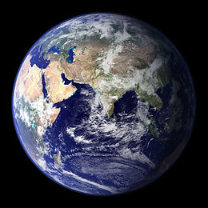

| Terra | ||
|---|---|---|
|  | ||
| L'emisfero orientale della Terra
(MODIS, Terra, 2002) |
||
| Stella madre | Sole | |
| Classificazione | Pianeta terrestre | |
| Parametri orbitali | ||
| Semiasse maggiore | 149 597 887,5 km | |
| Perielio | 147 089 074 km
0,98328989 au |
|
| Afelio | 152 097 701 km
1,01671033 |
|
| Circonf.orbitale | 924 375 700 km
6,179070 au |
|
| Periodo orbitale | 1,0000175 anni
365,256366 giorni |
|
| Velocità orbitale | 29,291 km/s (min)
29,789 km/s (media) 30,287 km/s (max) |
|
| Inclinazione
rispetto all'equat. del Sole |
7,25° | |
| Eccentricità | 0,016710219 | |
| Longitudine
del nodo ascendente |
348,73936 | |
| Argom. del
perielio |
114,20783° | |
| Satelliti | 1 (Luna) | |
| Anelli | 0 | |
| Dati fisici | ||
| Diametro equat. | 12 756,274 km | |
| Diametro polare | 12 713,504 km | |
| Diametro medio | 12 745,594 km | |
| Superficie | 5,0949553216 x 10^(14) m² | |
| Volume | 1,08321 x 10^(21) m³ | |
| Massa | 5,9726 x 10^24 kg | |
| Densità media | 5,514x 10^3 | |
| Acceleraz. di
gravità in superficie |
9,7801 m/s all'equatore
(0,997 32 g) |
|
| Velocità di fuga | 11 186 m/s | |
| Periodo di
rotazione |
0,997 270 giorni siderei
(23,9345 ore) |
|
| Velocità di
rotazione (all'equatore) |
465,11 m/s | |
| Inclinaz.
dell'asse sull' eclittica |
23,439 281° | |
| Temperature
superficiale |
184 K (-89 °C) (min)
288 K (15 °C) (media) 330 K (57 °C) (max) |
|
| Pressione atm. | 101 325 Pa | |
| Albedo | 0,367 | |